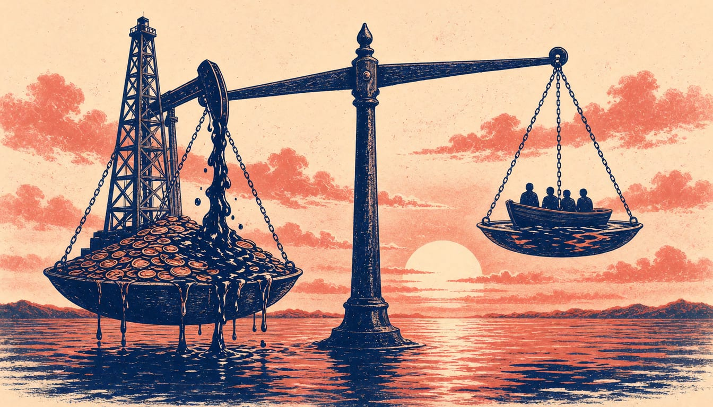

Guterres urges windfall tax on oil giants, cites $600 million climate fund
The UN Secretary-General told COP31 leaders that nine oil companies made $95 billion in profits last quarter, while the Loss and Damage Fund has received $600 million. He said it is time to make polluters pay.

The climate crisis is outrunning us, UN Secretary-General António Guterres told the COP31 leaders' summit in Antalya, Türkiye, on Wednesday. The nine largest oil companies made $95 billion in profits last quarter, he said. The Loss and Damage Fund has received around $600 million, what those companies made in about 14 hours.
Guterres urged governments to tax those windfall profits and use the money to help vulnerable countries recover. In euros, that is about €85 billion in quarterly profits against about €539 million in the fund. His proposed Climate Justice Compact rests on shared responsibility, shared security and shared benefits. "Polluters must pay", he said.
Behind that appeal lies what Guterres called make or bake time. Even if every country delivers its current national plans in full, he warned, the planet is heading for more than 2.5°C of warming by the end of the century. It is time to kick the habit and end the fossil-fuel addiction, he said. Fossil fuels must go the way of the dinosaurs, he added, with one difference: the dinosaurs did not have a lobby, but fossil fuels do.
European Commission President Ursula von der Leyen said Europe is the world's largest provider of climate finance. Last year alone, it contributed more than €32 billion to support developing countries, she said. Marshall Islands President Hilda Heine called on leaders to replenish the climate funds. She asked them to triple climate finance by 2035 and make it easier for Small Island Developing States to access the money. The United States is absent for the second year running, after President Donald Trump withdrew the country from the Paris Agreement.
Guterres told leaders the task at COP31 is to move from discussing the transition away from fossil fuels to organising, financing and delivering it, and he encouraged the current and future presidencies to carry the roadmap work forward.